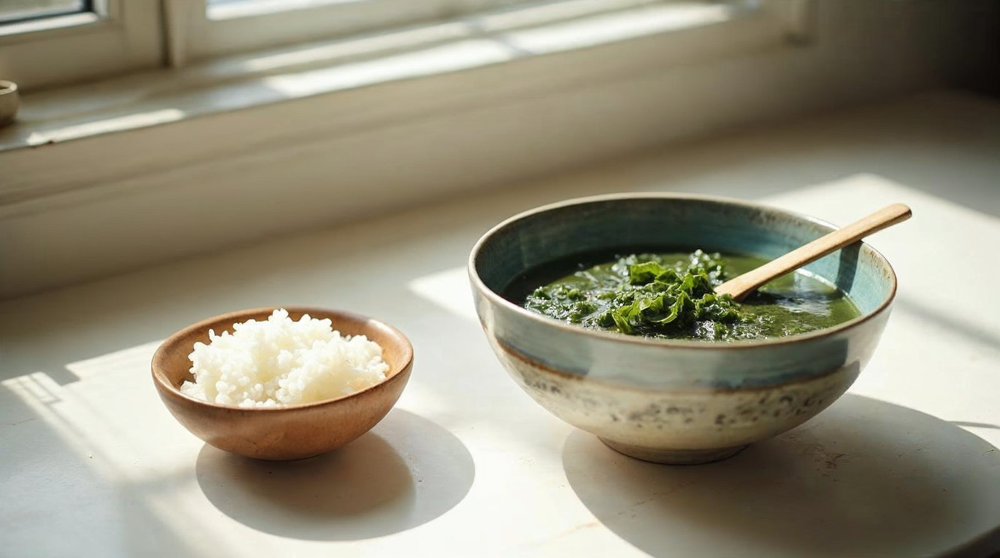

이종호 한의사 감수좋은꿈참사랑한의원 대표원장 (한의사 면허번호 19769)발행 2026-11-26 · 수정 2026-11-26
이 글의 차례
아침에 눈을 떠도 몸이 물에 젖은 솜 같습니다. 남들은 덥다는 사무실에서 혼자 카디건을 여미고, 먹는 양은 그대로인데 체중이 조금씩 늘어납니다. 그냥 나이 탓, 피곤 탓이라 여기다가 검진에서 갑상선 수치가 이상하다는 말을 듣고서야 '아, 그래서였나' 싶어집니다.
반대의 모습도 있습니다. 가만히 앉아 있는데 가슴이 두근거리고, 손이 떨리고, 남들보다 땀이 많이 나며, 잘 먹는데도 살이 빠집니다. 잠은 얕고 마음은 괜히 조급해집니다. 이것도 갑상선이 보내는 신호일 수 있습니다.
갑상선은 목 앞쪽에 나비 모양으로 자리한 작은 기관으로, 몸의 대사 속도를 조절하는 호르몬을 만듭니다. 이 호르몬이 모자라면 기능 저하, 지나치면 기능 항진이라고 부릅니다. 진단과 호르몬 약은 내분비내과의 몫이고, 한의원은 그 치료를 유지하면서 남아 있는 불편과 생활을 함께 보는 자리라고 생각해 주시면 됩니다.
진료실에서 이런 말씀을 자주 듣습니다. "약 먹고 수치는 정상이라는데, 저는 아직도 피곤해요." 숫자는 맞춰졌는데 몸은 아직 따라오지 못한 것 같은 답답함, 그 마음이 충분히 이해됩니다. 그 이야기를 들으려고 저는 손목을 짚습니다.
왜 갑상선 호르몬이 몸 전체를 흔들까요
갑상선 호르몬은 몸의 보일러 온도를 정하는 손잡이와 비슷합니다. 손잡이가 낮게 돌아가면 열이 덜 나고, 심장은 느려지고, 장 움직임도 둔해집니다. 높게 돌아가면 열이 많이 나고, 심장은 빨라지고, 장도 바빠집니다.
그래서 갑상선 문제는 한 군데가 아니라 여러 곳에서 동시에 신호가 옵니다. 피로, 추위, 변비, 부종, 생리 변화, 피부 건조, 기억력 저하처럼 서로 관계없어 보이는 불편이 함께 오는 까닭이 여기에 있습니다. 항진이라면 두근거림, 더위, 땀, 설사, 체중 감소, 불면, 손 떨림이 함께 오기 쉽습니다.
기능 저하의 흔한 원인으로는 자가면역 갑상선염(하시모토 갑상선염)이 알려져 있습니다. 기능 항진은 그레이브스병이 흔하고, 출산 뒤나 바이러스 감염 뒤 일시적으로 염증이 생기며 수치가 흔들리는 경우도 있습니다. 원인에 따라 경과와 치료가 다르니, 어떤 이름의 진단이었는지 꼭 알아 두세요.
한의학에서는 기능 저하처럼 몸이 차고 처지는 모습을 양기가 부족한 쪽으로, 항진처럼 열이 오르고 마음이 조급한 모습을 음이 부족하고 열이 뜨는 쪽으로 살펴 왔습니다. 저는 이 구분을 진단명 대신 쓰지 않고, 호르몬 치료와 별개로 남은 불편의 결을 읽는 데 씁니다.

결과지의 갑상선 숫자, 이렇게 읽어 봅니다
갑상선 검사에서는 보통 TSH와 유리 T4(free T4)를 함께 봅니다. TSH는 뇌하수체가 갑상선에게 '호르몬을 더 만들라'고 보내는 신호입니다. 그래서 갑상선이 일을 덜 하면 TSH가 올라가고, 너무 많이 하면 TSH가 내려가는, 거꾸로 움직이는 관계입니다.
TSH만 조금 높고 유리 T4는 정상이라면 '무증상 갑상선 기능 저하'라는 말을 듣기도 합니다. 이 경우 바로 약을 쓸지 지켜볼지는 수치와 증상, 나이, 임신 계획 등을 보고 내과에서 정합니다. 항체 검사나 초음파를 함께 권하기도 합니다.
결과를 받으면 숫자와 함께 '다음 검사는 언제'를 꼭 적어 두세요. 갑상선 약은 수치에 맞춰 용량을 조절하는 약이라, 정해진 간격으로 다시 재는 일이 치료의 일부입니다.
갑상선 탓일까, 다른 까닭일까
피로와 추위, 체중 증가는 갑상선 말고도 원인이 많습니다. 빈혈이 있으면 쉽게 숨이 차고 손발이 차며 피곤합니다. 잠이 부족하거나 우울감이 길게 이어질 때도 몸이 무겁고 의욕이 떨어집니다. 그래서 저는 갑상선 수치가 정상이라고 들은 분의 피로도 가볍게 넘기지 않습니다.
두근거림과 땀, 체중 감소는 항진 말고도 불안이 커진 시기, 갱년기의 열감, 혈당 문제, 심장 리듬 문제에서도 나타날 수 있습니다. 두근거림이 갑자기 시작해 갑자기 멈추거나, 맥이 불규칙하게 건너뛰는 느낌이 든다면 심장 리듬도 함께 확인해 보시길 권합니다.
목 앞쪽이 붓거나 혹이 만져지는 것은 기능과는 별개로 결절 문제일 수 있습니다. 수치가 정상이어도 목에 만져지는 것이 있다면 초음파 확인을 받아 보세요.
저하와 항진, 몸이 보내는 신호를 나란히 놓아 봅니다
기능 저하일 때는 모든 것이 느려지는 쪽으로 갑니다. 아침에 일어나기 힘들고, 말이 느려지고, 얼굴과 눈두덩이 붓고, 피부가 거칠어집니다. 대변은 굳고, 생리 양이 늘거나 주기가 흐트러지기도 합니다. 추위를 유난히 많이 타고, 기억이 잘 나지 않는다고 하시는 분도 많습니다.
기능 항진일 때는 반대로 모든 것이 빨라집니다. 가만히 있어도 맥이 빠르고, 계단 몇 층에 숨이 차고, 손끝이 가늘게 떨립니다. 잘 먹는데 살이 빠지고, 대변 횟수가 늘고, 더위를 참기 어렵습니다. 눈이 튀어나오거나 뻑뻑한 느낌이 드는 분도 있습니다.
같은 사람에게서 두 모습이 차례로 오기도 합니다. 갑상선에 염증이 생기면 처음에는 저장된 호르몬이 새어 나와 항진처럼 보이다가, 나중에는 기능 저하로 넘어가는 경우가 있다고 알려져 있습니다. 그래서 몇 달 사이 증상이 바뀌었다면 '이번엔 다른 병인가' 하고 따로 생각하지 마시고, 같은 흐름일 수 있다는 점을 내과에서 함께 상의해 보세요.
약은 그대로, 남은 불편은 함께
갑상선 약을 드시는 분 가운데 '한약을 먹으려면 갑상선 약을 끊어야 하느냐'고 묻는 분이 계십니다. 그렇지 않습니다. 호르몬 약은 수치를 맞추는 중심이고, 저는 그 위에서 잠과 소화, 체온, 피로처럼 숫자로 다 잡히지 않는 부분을 함께 봅니다.
약을 바꾸거나 용량을 조절한 직후라면 몸이 새 용량에 적응하는 데 몇 주가 걸리기도 합니다. 이 기간에는 새로운 것을 한꺼번에 여럿 시작하지 않는 편이 좋습니다. 무엇이 몸에 영향을 주었는지 나중에 구분하기 어려워지기 때문입니다.
예를 들면 이런 경우입니다
실제 어느 분의 사연이 아니라, 진료실에서 자주 보는 모습을 바탕으로 그려 본 장면입니다.
예를 들어 갑상선 약을 몇 해째 드시며 수치는 안정적인데, 오후만 되면 기운이 뚝 떨어지고 손발이 차다는 분이라면, 약 시간과 아침 식사, 잠의 질부터 함께 봅니다. 약을 아침 빈속에 드시는지, 철분제나 칼슘제를 같은 시간에 드시지는 않는지도 여쭙습니다.
출산 뒤 몇 달 사이에 두근거림과 불면, 피로가 번갈아 온다는 분이라면, 산후 피로로만 여기지 말고 갑상선 검사를 받아 보시길 권합니다. 출산 뒤 일시적으로 갑상선 수치가 흔들리는 경우가 있다고 알려져 있습니다.
항진으로 약을 드시기 시작한 뒤 잠이 얕고 저녁마다 마음이 붕 떠 있다는 분이라면, 오후 커피와 늦은 운동부터 함께 정리해 봅니다. 맥이 빠른 시기에는 숨이 턱까지 차는 운동보다 대화가 가능한 정도의 걷기가 몸에 부담이 적습니다. 운동을 늘리는 시기는 수치가 안정된 뒤 처방한 의사와 상의해 정하시길 권합니다.
갑상선 수술을 받으셨거나 방사성 요오드 치료를 받은 뒤 호르몬 약을 드시는 분이라면, 약을 거르지 않는 일이 무엇보다 중요합니다. 여행이나 명절처럼 일정이 흐트러지는 날을 위해 약을 따로 챙겨 두는 작은 습관부터 같이 정해 봅니다.
잠과 소화, 체온에서 먼저 드러나는 변화
갑상선 이야기를 하다 보면 많은 분이 잠 이야기를 함께 꺼내십니다. 기능 저하일 때는 아무리 자도 개운하지 않고 낮에도 졸음이 쏟아진다고 하시고, 항진일 때는 몸은 지쳤는데 머리가 깨어 있어 잠들기 어렵다고 하십니다. 같은 '피곤하다'는 말이라도 결이 전혀 다릅니다.
소화도 비슷합니다. 저하일 때는 장이 느려져 더부룩하고 변이 굳기 쉽고, 항진일 때는 장이 바빠져 배가 자주 고프고 변이 묽어지기 쉽습니다. 저는 맥을 짚으며 이런 결을 하나씩 여쭙고, 수치와는 별도로 지금 몸이 어느 쪽으로 기울어 있는지 기록해 둡니다. 그 기록이 쌓이면 수치가 바뀌기 전에 몸이 먼저 보내는 신호를 알아채는 데 도움이 됩니다.
먼저 이렇게 여쭙니다
- 기능 저하인가요, 항진인가요? 진단 이름은 무엇이었나요?
- 최근 TSH와 유리 T4 수치, 그리고 다음 검사 예정일은 언제인가요?
- 드시는 갑상선 약의 이름과 용량, 드시는 시간은 어떻게 되나요?
- 피로, 추위나 더위, 땀, 두근거림, 체중 변화는 어떤가요?
- 변비나 설사, 생리 주기, 잠은 어떤가요?
- 임신 중이거나 임신을 계획하고 계신가요?
일상에서 먼저 해 볼 수 있는 것
갑상선 약을 드신다면, 처방받을 때 들은 복용법을 지키는 것이 가장 먼저입니다. 흔히 아침 빈속에 물과 함께 드시고, 철분제나 칼슘제, 일부 위장약과는 시간 간격을 두라는 안내를 받습니다. 내 약의 복용법이 어땠는지 약 봉투를 한 번 다시 읽어 보세요.
- 갑상선 약은 매일 같은 시간에, 안내받은 방법대로 드시기
- 다른 약이나 영양제를 새로 시작할 때는 처방한 의사나 약사에게 먼저 알리기
- 미역, 다시마 같은 해조류나 요오드가 든 영양제를 한꺼번에 많이 드시지 않기, 특히 항진이라면 의사와 상의하기
- 잠드는 시각을 일정하게 맞추고, 항진 시기에는 카페인을 줄이기
- 저하로 몸이 처질 때는 무리한 운동보다 짧은 걷기부터 시작하기
- 피로와 체온, 체중을 한 주에 한 번씩 적어 두기
건강에 좋다고 알려진 해조류도, 갑상선 상태에 따라서는 많이 드시는 것이 부담이 될 수 있습니다. 좋다는 음식을 몰아서 드시기보다 평소 식사에서 고르게 드시는 쪽이 무난합니다.
마음도 함께 살펴 주세요. 항진일 때는 사소한 일에도 마음이 조급해지고, 저하일 때는 처지고 의욕이 없어지기 쉽습니다. 이건 성격 탓이 아니라 호르몬의 영향일 수 있다는 것을 가족도 알아 두면 서로 덜 힘듭니다.
한의원에서 함께 살필 수 있는 경우
- 갑상선 수치는 안정되었는데 피로, 추위, 붓기, 변비가 남아 있는 경우
- 항진 치료 중 잠이 얕고 마음이 조급하며 땀이 많은 경우
- 체중 변화가 신경 쓰여 체성분과 식사 리듬을 함께 보고 싶은 경우
- 생리 주기와 소화, 손발 냉증이 함께 흔들리는 경우
좋은꿈참사랑한의원에 처음 오시면 먼저 진단 이름과 최근 수치, 드시는 약을 확인하고, 아래 '먼저 확인이 필요한' 신호가 없는지부터 봅니다. 그다음 맥을 짚으며 잠, 땀, 체온, 대소변을 여쭙고, 필요하면 인바디로 근육량과 체지방을 함께 기록합니다.
그 뒤 진찰한 내용을 바탕으로 생활 목표 하나와 함께 침이나 한약 상담을 상태에 맞춰 정합니다. 한약을 상의할 때는 갑상선 약과 다른 약을 모두 확인하고 신중하게 정하며, 해조류처럼 요오드가 많은 재료가 들어가는지도 살핍니다. 갑상선 약은 처방한 의사와 상의 없이 줄이거나 끊지 않습니다.
다시 오시면 지난번 정한 목표와 함께, 그사이 내과에서 잰 수치가 있었는지도 이어서 여쭙습니다. 수치와 몸의 느낌을 나란히 적어 가면 둘 사이의 간격이 보이기 시작합니다.
이렇게 기록해 오시면 상담이 쉬워집니다
- 최근 갑상선 검사 결과지(TSH, 유리 T4, 항체 검사가 있다면 함께)
- 드시는 약과 영양제의 이름, 용량, 드시는 시각
- 일주일 동안의 잠든 시각과 깬 시각, 낮의 피로 정도
- 체중과 체온 느낌(유난히 춥거나 더웠던 날)
- 대변 상태와 생리 주기
몸의 사정을 알아주는 일부터
갑상선은 작은 기관이지만 하루 전체의 온도를 정합니다. 그동안 '내가 게을러서 그런가', '왜 이렇게 예민해졌나' 하고 스스로를 다그쳐 오셨다면, 이제는 몸의 사정을 조금 알아주셔도 괜찮습니다.
수치는 내과에서, 하루의 리듬은 진료실에서 함께 맞춰 가면 됩니다. 서두르지 않고 한 가지씩 보겠습니다. 다음에 오시면 지난 한 주 동안 가장 처졌던 시간이 언제였는지부터 여쭙겠습니다.
이런 증상은 먼저 확인이 필요합니다
- 가슴이 심하게 두근거리며 맥이 불규칙하거나, 고열과 함께 정신이 흐려지는 경우
- 항갑상선제를 드시는 중 고열이나 심한 목 통증이 생긴 경우
이런 신호가 있으면 한의원보다 가까운 병원이나 응급실을 먼저 찾으세요.
함께 읽으면 좋은 글
- 손발이 찬 수족냉증, 레이노·갑상선·빈혈과 어떻게 구분하나요?
- 피곤함이 오래가면 혈액검사가 필요한가요?
- 건강검진 혈액검사 결과지를 가져가면 무엇을 같이 보나요?
- 체중이 더 이상 줄지 않는 정체기에는 무엇을 먼저 점검하나요?
- 인바디 결과지는 어디부터 보면 되나요?

여쭙는 것
- 기능 저하인가요, 항진인가요? 진단 이름은 무엇이었나요?
- 최근 TSH와 유리 T4 수치, 그리고 다음 검사 예정일은 언제인가요?
- 드시는 갑상선 약의 이름과 용량, 드시는 시간은 어떻게 되나요?
생활에서 해 볼 것
- 갑상선 약은 매일 같은 시간에, 안내받은 방법대로 드시기
- 다른 약이나 영양제를 새로 시작할 때는 처방한 의사나 약사에게 먼저 알리기
- 미역, 다시마 같은 해조류나 요오드가 든 영양제를 한꺼번에 많이 드시지 않기, 특히…
한의원에서 함께 살필 것
- 갑상선 수치는 안정되었는데 피로, 추위, 붓기, 변비가 남아 있는 경우
- 항진 치료 중 잠이 얕고 마음이 조급하며 땀이 많은 경우
- 체중 변화가 신경 쓰여 체성분과 식사 리듬을 함께 보고 싶은 경우
먼저 확인이 필요한 신호
- 가슴이 심하게 두근거리며 맥이 불규칙하거나, 고열과 함께 정신이 흐려지는 경우
- 항갑상선제를 드시는 중 고열이나 심한 목 통증이 생긴 경우
한눈에 보는 표
| 구분 | 핵심 |
|---|---|
| 여쭙는 것 | 기능 저하인가요, 항진인가요? 진단 이름은 무엇이었나요? 최근 TSH와 유리 T4 수치, 그리고 다음 검사 예정일은 언제인가요? |
| 생활에서 해 볼 것 | 갑상선 약은 매일 같은 시간에, 안내받은 방법대로 드시기 다른 약이나 영양제를 새로 시작할 때는 처방한 의사나 약사에게 먼저 알리기 |
| 한의원에서 함께 살필 것 | 갑상선 수치는 안정되었는데 피로, 추위, 붓기, 변비가 남아 있는 경우 항진 치료 중 잠이 얕고 마음이 조급하며 땀이 많은 경우 |
| 먼저 확인이 필요한 신호 | 가슴이 심하게 두근거리며 맥이 불규칙하거나, 고열과 함께 정신이 흐려지는 경우 항갑상선제를 드시는 중 고열이나 심한 목 통증이 생긴 경우 |
자주 묻는 질문
갑상선 약을 먹으면서 한약을 같이 먹어도 되나요?
드시는 약과 최근 수치를 모두 알려 주시면 그에 맞춰 신중하게 정합니다. 갑상선 약은 처방한 의사와 상의 없이 줄이거나 끊지 않고, 한약도 복용 시간을 갑상선 약과 겹치지 않게 안내합니다.
수치는 정상인데 왜 계속 피곤할까요?
수치가 맞춰진 뒤에도 몸이 따라오는 데 시간이 걸리기도 하고, 빈혈이나 잠 부족, 우울감처럼 다른 이유가 함께 있을 수도 있습니다. 피로가 오래가면 내과에서 다른 원인도 확인해 보시고, 잠과 식사, 체온을 함께 살펴보시길 권합니다.
갑상선이 안 좋으면 미역이나 다시마를 많이 먹으면 되나요?
갑상선 상태에 따라 요오드가 많은 음식을 몰아서 드시는 것이 오히려 부담이 될 수 있습니다. 특히 항진이나 자가면역 갑상선염이 있다면 해조류와 요오드 영양제는 의사와 상의하세요.
한의원에서 갑상선 수치를 잴 수 있나요?
갑상선 호르몬 검사와 진단은 내과에서 받으시도록 안내합니다. 원내에서 확인할 수 있는 검사 항목은 방문 전 전화로 확인해 주세요.
좋은꿈참사랑한의원은 재진 때 지난번 이야기부터 이어서 여쭙니다. 진료시간과 예약은 오시는 길에서 확인하세요.
어디서 상담받을 수 있나요?
좋은꿈참사랑한의원은 서울 동작구 만양로2길 2 신성빌딩 3층·5층(서울 동작구 상도동, 7호선 상도역 3번 출구 근처)에 있습니다. 한의사 3명(이종호 대표원장, 조영기 수석진료원장, 정원영 진료원장)이 진료합니다. 진료시간은 평일 09:30~20:00(점심 13:00~14:00), 토·일·공휴일 09:30~15:00이며, 방문 전 전화로 확인을 권합니다. 예약은 네이버 예약, 카카오톡 상담, 전화 02-815-7510로 받습니다.
이 글은 일반적인 건강 정보이며 개인의 진단이나 치료를 대신하지 않습니다. 증상이 있거나 복용 중인 약이 있다면 진료를 통해 확인하세요. 치료 효과는 개인마다 다를 수 있습니다.
작성 기준: 일반적으로 알려져 있는 건강 정보를 참고해 정리했습니다(대표원장 감수). 증상 기록은 1~2주 동안 하루 1회, 비슷한 시간에 적어 오시면 지난 상태와 비교하기 쉽습니다.